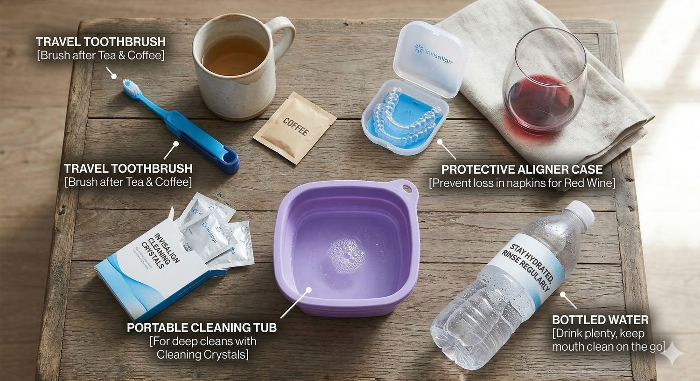

Many patients ask, "can you drink with invisalign?"
Our Experts Say: You should only drink plain water while wearing your aligners.
While Invisalign clear aligners are durable, they are not invincible. When you drink with Invisalign trays still in your mouth, liquid seeps into the space between the plastic and your tooth enamel and creates a "stagnant pool" of whatever you are drinking, which can lead to tooth decay or gum disease.
The Danger of Hot, Sugary, and Acidic Drinks
It might be tempting to sip on iced coffee, fruit juices, or lemon water, suddenly forgetting that you have the Invisalign in your mouth, but these can cause hidden damage. So, Dante Gonzales Orthodontics advises that it is highly recommended to remove Invisalign aligners before consuming any beverages other than plain water to avoid damage.
- Hot Drinks: You must avoid drinking warm or hot water, hot coffee, hot chocolate, and tea. High temperatures can warp or melt the plastic of your Invisalign trays, ruining their fit and delaying your progress.
- Sugary and Acidic Drinks: Sugary beverages, sports drinks, and energy drinks feed harmful bacteria. These sugary and acidic drinks get trapped under the trays and erode enamel, leading to permanent sensitivity and cavities.
- Sparkling Water: Even though it's clear, you should remove your aligners before you drink sparkling water. The carbonation in this drink is acidic and can harm your tooth enamel over time.
Dealing with Staining: Coffee, Tea, and Wine
If you love your black coffee, tea, or a glass of red wine, you must remove your aligners first. Invisalign aligners can become stained and quickly discolour if you drink these without removal, making your "clear" braces look yellow or cloudy.
Using a straw can help reduce the exposure of sugary or dark drinks to your teeth. However, it does not completely prevent liquid from seeping under Invisalign clear aligners. Because of this, it is always best to remove your aligners before drinking coffee or any other non-water beverage.
Dante Gonzales Orthodontics suggests that if you choose to drink anything other than water, do so during meals rather than sipping throughout the day. Our experts recommend this because the 22-hour rule suggests that wearing aligners for 20–22 hours a day is essential.

Troubleshooting Bad Breath and Plaque
If you notice persistent bad breath or visible plaque buildup, it's a sign that food particles or added sugars are being trapped against your teeth.
To maintain a confident smile, you should always brush your teeth and rinse your mouth after eating or drinking before reinserting your trays. If you aren't at home, rinse thoroughly with water with Invisalign removed. Dante Gonzales Orthodontics reminds patients that Invisalign aligners are not designed for the force of chewing; remove your aligners to eat so you don't crack the plastic.
Travel Checklist for Cleaning Invisalign
Travelling requires preparation to keep your Invisalign treatment on track, especially for rinsing your Invisalign trays with lukewarm water every time you take them out. Dante Gonzales Orthodontics recommends packing a dedicated kit so you can smile confidently anywhere.
- Travel toothbrush: Essential to brush your teeth after drinking tea or coffee.
- Protective aligner case: To prevent losing trays in a napkin while out for red wine.
- Portable cleaning tub: For deep cleans using cleaning crystals.
- Bottled water: To drink plenty and keep the mouth clean on the go.

Elevate Your Journey to a Flawless Smile with Expert Orthodontic Care
Healthy habits are the foundation of a successful smile transformation, which requires expert guidance. Dante Gonzales Orthodontics provides the specialised care and personalised hygiene strategies necessary to navigate Invisalign treatment with confidence. Our professional care in Dublin or Tracy, CA, provides the dedicated support needed to maintain pristine oral health and achieve precise, lasting results for your smile goals.
Frequently Asked Questions (FAQs)
1. Can I drink water while wearing Invisalign aligners?
Yes. Plain cold water or room temperature water is the only beverage you should consume while wearing your Invisalign aligners. Drinking water with Invisalign helps keep your mouth hydrated and supports good dental health during treatment.
2. Can I drink coffee with Invisalign, or do I need to remove aligners first?
You should remove aligners before you drink coffee with Invisalign. Hot and dark beverages can stain both your aligners and increase the risk of enamel erosion if liquid gets trapped underneath.
3. Is it okay to drink lemon water or sugary drinks during Invisalign treatment?
You can enjoy sugary drinks or drink lemon water only after you remove the aligners. Lemon juice and other acidic or sugary drinks can collect under clear aligners and lead to enamel erosion and dental health problems.
4. Can I drink wine, including white wine, while wearing clear aligners?
No. Whether it is red or white wine, you should remove aligners before enjoying beverages like wine. These drinks can stain trays and increase the risk of enamel damage during Invisalign treatment.
5. Can I chew gum or drink sparkling water with Invisalign?
You should not chew gum while wearing your Invisalign aligners because it can stick and damage the trays. Sparkling water, like other beverages, should only be consumed after you remove aligners to protect your beautiful smile.
Ready to start your smile journey?
Book a complimentary consultation with Dr. Dante Gonzales in Dublin or Tracy, CA. We will review your case and map out a clear, personalised treatment plan.
Request ConsultationThis article is for general education and is not a substitute for a professional orthodontic evaluation. Treatment recommendations and outcomes vary from person to person.